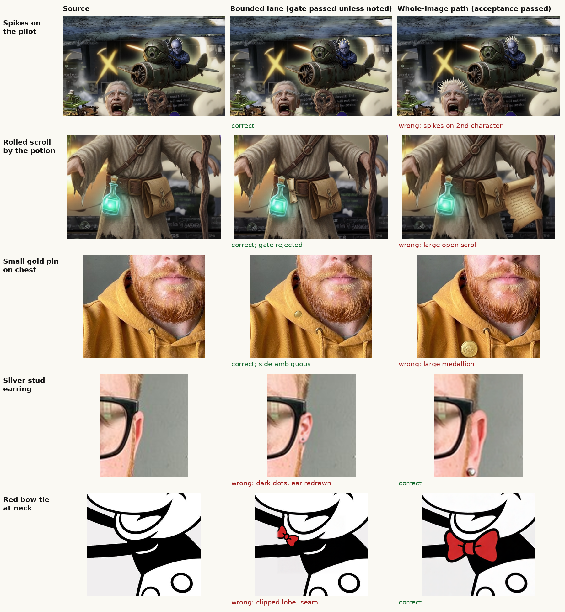
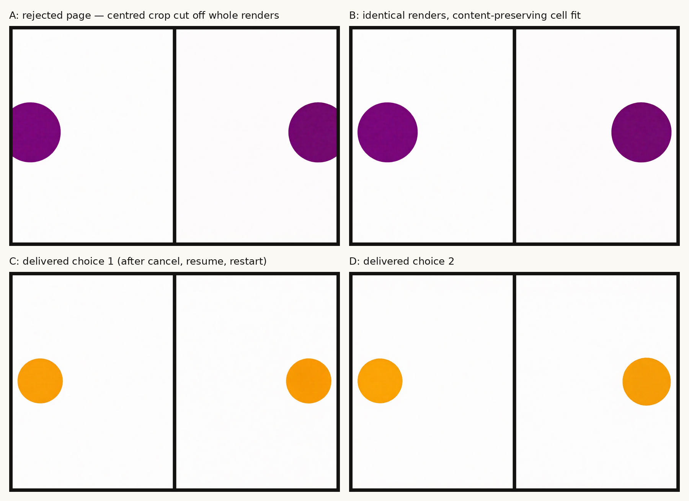

FL-TR-2026-02 · FINAL RESEARCH REPORT 002 · VERSION 1.0
Kraken
From Whole-Image Generation to Bounded Visual Editing
We investigated where reference-driven image editing fails: small details, preserved identities, visual acceptance and coherent comics. A narrow masked recolor survives real Discord delivery with every non-target pixel unchanged. Complex recoveries required curation. Version 0.2 added the cancel/resume delivery lifecycle and a pre-registered study keeping automatic accessory additions disabled. Version 0.3 completes the original two-reference eight-panel comic pair through Discord voting and direct visual review.

- Production recoveries
- Two reviewed corrections delivered and hash-verified; manual work disclosed.
- Pixel preservation
- Two downloaded recolor choices; exact equality outside the target.
- Acceptance controls
- Five selected controls passed the combined gate; model-only checking falsely accepted two geometry failures.
- Delivery lifecycle
- Verified live: cancellation, panel/page reuse on resume across connector restarts and a GPU host reboot, and voted two-page delivery.
- Two-reference comic pair
- Verified live (Discord reply
1570683063338409984): two eight-panel binary-ink pages combining ordered cartoon and photographic references, reviewed directly. - Research status
- Final 1.0, 28 November 2026; editorial finalization of draft 0.3 without new experiments or peer review. Automatic accessory additions remained disabled at the study close after two wrong bounded passes in a seven-request study. Deployment statements describe historical evidence, not a fresh production check.
Full-scene recoveries

Accessory study

Comic experiments



1570683063338409984). Both choices preserve source order, monochrome binary ink and the shared rocket drop-and-catch arc; finer interior human facial contours and minor wheel drift remain.Selected cases, not a representative benchmark. The full report includes failed attempts, complete comic context, exact prompts and comparison limits.
What changed
We reduced what the generator controls. Deterministic masks protect pixels; code checks binary-ink chroma and mid-tones and assembles page structure; chained single-cell edits advance shared scenes one beat at a time.
Citation
Infected Research / FrackLabs. 2026. Kraken: From Whole-Image Generation to Bounded Visual Editing. Research Report 002, FL-TR-2026-02. Version 1.0, finalized 28 November 2026; based on draft 0.3 of 13 November 2026.